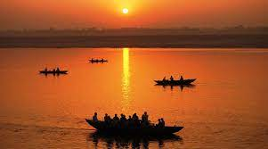
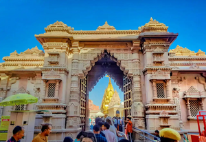
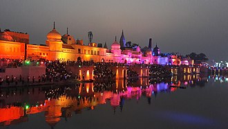

Due to its position on the banks of the sacred Ganges River, Varanasi is considered the holiest place in India for devout Hindus. Even with just one day, you’ll have time to experience the pulse of this city and check out some of Varanasi’s top attractions. Here’s how to do it.
1 DAY PLAN AT Varanasi

Arrival in Varanasi(Morning)
Wake before dawn and prepare yourself for the quintessential Varanasi experience: a sunrise boat ride on the Ganges River. You’ll be paddled along the sacred river—passing pilgrims performing early-morning rituals along riverside ghats (riverside steps)—just as the sun is beginning to rise. After your boat ride, continue exploring the area around the river with a guide; walking tours help you navigate the labyrinthine lanes of Old Varanasi and lead you to some of the city’s most important temples and ghats, which include the Golden Temple (Kashi Vishwanath) and Kedar Ghat.

Varanasi Sightseeing(Afternoon)
In the afternoon, head out to Sarnath, a small town that’s only 30 minutes from Varanasi by car. As one of the four main Buddhist pilgrimage centers in India, the UNESCO World Heritage Site is full of beautiful old stupas and temples. Guided tours, which provide crucial historical and religious context, typically cover the Chaukhandi Stupa and the Dhamek Stupa, which commemorates where the Buddha allegedly gave his first sermon. The Sarnath Museum, home to almost 7,000 Buddhist art and artifacts, is also worth a visit.

GANGA AARTI-(evening)
In the evening, make your way back to Varanasi in time for Aarti, an evening prayer ceremony on the banks of the Ganges River. Starting just after sunset, this hour-long ritual takes place at Dashashwamedh Ghat and involves a group of traditionally-clad Hindu priests paying their respects to the holy river. Witnessing the priests play large brass lanterns to the tune of traditional religious hymns is a magical experience that’s best experienced with a guide for context. After the ceremony, grab dinner at one of the many rooftop restaurants in the area for a final glimpse of the Ganges River.